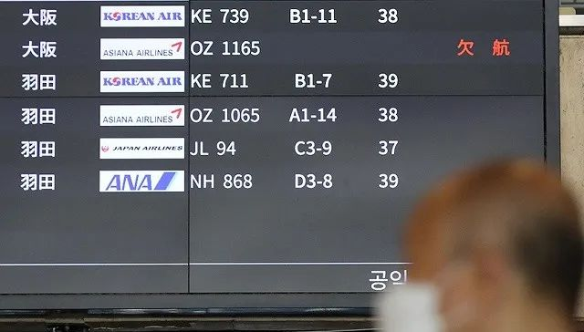

此时此刻，他们在日本，他们在韩国
原文链接 备份链接 随着新冠肺炎疫情在全球蔓延，韩国和日本已经成为疫情高发地区。据韩国卫生部门消息，截至当地时间3月3日16时，韩国感染者总数升至5186人。日本形势同样不容乐观，截至当地时间3日下午六点半，已有985例确诊病例。当地疫情 …
图片来源：Yonhap
记者：肖恩
“
韩国外交部长官康京和呼吁各国不要采取过度的入境限制措施，并称这是缺乏防疫能力的国家采取的粗放措施。
”
在日本3月5日宣布加强对韩国的入境管制后，韩方反应强烈。
据韩联社消息，韩国外长康京和6日在首尔召见日本驻韩国大使富田浩司，就日本政府针对韩国加强入境管制措施提出抗议。韩联社指出，外长亲自召见实属罕见，预计康京和将敦促日方重新审视该措施。
韩国青瓦台也在6日就日本加强入境管制表示强烈遗憾。青瓦台称，国家安全保障会议（NSC）常任委员们在当天的会议上一致认为，韩国通过举世公认的科学、透明的防疫机制严格管控疫情，而日本采取不透明且消极的防疫措施，没有获得国际社会的信任。日本政府发布这种不当措施前没有与韩方事先沟通令人费解，韩方将根据相互主义原则研究必要的应对方案。
日本首相安倍晋三5日在新型冠状病毒感染症对策总部会议上提出，将要求对来自韩国和中国的入境者，包括日本人在内，在指定场所隔离两周，同时避免利用国内公共交通。该措施从本月9日起实施到月底。
但日本厚生劳动相加藤胜信6日在内阁会议后的记者会上表示，这不是依据《检疫法》宣布的措施，不具有强制力。
加藤胜信称，从中韩回国的日本人将居家隔离，访日外国人会被要求留在各自预定的酒店或检疫所的指定设施。隔离期间住宿费及交通费可能将由本人负担。
此外，安倍晋三5日还宣布停止日本驻中韩两国大使馆签发签证的效力。来自中韩的航班也限定降落在成田机场和关西机场，这两座机场将加大检疫力度。
日本外务省已经将除部分地区外的韩国全境传染病危险提醒级别上调至“二级”，呼吁不必要、非紧急情况下谨慎前往。针对大邱市和庆尚北道3市5郡则发布呼吁暂勿前往的“三级”提醒。
安倍晋三表示，强化针边境口岸对策的原因是日本各地的感染者增加，担心东京奥运无法如期举行的声音也不断出现，因此政府必须采取积极果断的措施。
不过，在宣布措施前的协调中，一些听取政府说明的执政党干部提出了异议，认为“这种做法令人难以赞同”，指出韩国目前还没有对从日本入境人员加强管制，日本这样做可能会被指责“行为过激”。
在2019年的访日游客中，中韩游客占了总数的55％。《日本经济新闻》指出，从2019年的访日消费数据来看，中国大陆约为1.8万亿日元，占总体的近4成，韩国排在第三位，约为4200亿日元。
由于限制入境措施生效后必将给日本经济带来打击，日本政府在5日召开的未来投资会议上指出，在疫情结束后将通过官民合作，力促旅游需求回升，保障奥运会成功举办。
截至6日零时，韩国累计确诊新冠肺炎病例6284例，死亡42例，是除中国外确诊人数最多的境外国家。
据韩国外交部6日消息，截至当天上午10时，因新冠肺炎疫情对韩国采取入境管制措施的国家和地区达到102个，其中37个国家和地区对来自韩国各地的人员实施禁止入境措施；6个国家和地区禁止近期访问韩国特定地区的人员入境；15个国家和地区针对自韩旅客采取14天隔离措施；44个国家和地区加大检疫力度、建议居家隔离、进行测温等实施较低水平的入境管制措施。
韩国外交部长官康京和呼吁各国不要采取过度的入境限制措施，并称这是缺乏防疫能力的国家采取的粗放措施。
韩联社指出，根据去年10月发布的《全球卫生安全指数》，对韩国采取全面或部分禁止入境措施的逾43个国家和地区中，排名在韩国之上的只有澳大利亚。
这份报告对各国预防、查明和报告、快速响应、医疗体系、遵守国际规范和风险环境6个项目进行评估，总分为100分。在2019年的评估中，全球195个国家平均分为40.2分，韩国以70.2分排在第9。美国排名第一。
韩联社称，目前大部分对韩国采取入境管制的国家属于“准备最不充分”的下游73国行列，如密克罗尼西亚联邦（124位）、塞舌尔（133位）、牙买加（147位）、科摩罗（160位）等。此外，土耳其（40位）、蒙古国（46位）、吉尔吉斯斯坦（47位）、沙特阿拉伯（47位）等国家虽高于平均水平但不在前列。
也有部分卫生环境相对良好的国家对韩国采取禁止入境措施，如马来西亚（18位）、日本（21位）和新加坡（24位）。
韩国副总理兼企划财政部长官洪楠基6日表示，韩政府将开展全方位外交，动员所有力量积极应对，尽可能减少各国因新冠疫情而采取的措施对韩国经济带来的负面影响。原计划在3月举行的韩中经贸部长会议、韩俄副总理会谈将被推迟。
洪楠基还表示，受到疫情影响，本土消费心理和企业经营活动大幅萎缩，内需、生产、出口等实体经济面临困难。一旦金融、外汇市场剧烈波动，政府将根据应急计划迅速、准确地提前应对。

原文链接 备份链接 随着新冠肺炎疫情在全球蔓延，韩国和日本已经成为疫情高发地区。据韩国卫生部门消息，截至当地时间3月3日16时，韩国感染者总数升至5186人。日本形势同样不容乐观，截至当地时间3日下午六点半，已有985例确诊病例。当地疫情 …
原文链接 备份链接 海外疫情紧张，在外中国人如何回国？韩国来华航班为何爆满？中国是否会对疫情高风险国家人员采取限制措施？ 3月1日，国务院联防联控机制召开新闻发布会，就如何有效防控海外疫情输入的相关问题，给出权威回答。 发布会现场 全国治 …
原文链接 备份链接 澎湃新闻记者 于潇清 近日，韩国和日本新冠肺炎疫情防控形势日趋严峻，引起国际社会关注。 据韩国中央防疫对策本部2月28日最新通报，截至当天上午9点，韩国再新增新冠肺炎确诊病例256例，累计2022例，死亡病例达13例。 …
原文链接 备份链接 韩国中央防疫对策本部25日通报，截至当地时间当天下午4时，韩国较当天上午9时新增84例新冠肺炎确诊病例，累计确诊病例达977例，共出现10例死亡病例。与前一天下午4时相比，一天内增加144例。 韩国总统文在寅25日表 …
原文链接 备份链接 2月23日下午，在仁川机场，大韩航空KE957号航班搭载的韩国公民从以色列返抵韩国。图片来源：韩联社 记者：高恺仪 “ “如果我们与以色列政府有过紧密沟通，本可避免这样的波折，国际信誉的降低，会让反韩情绪直接影响到韩国 …